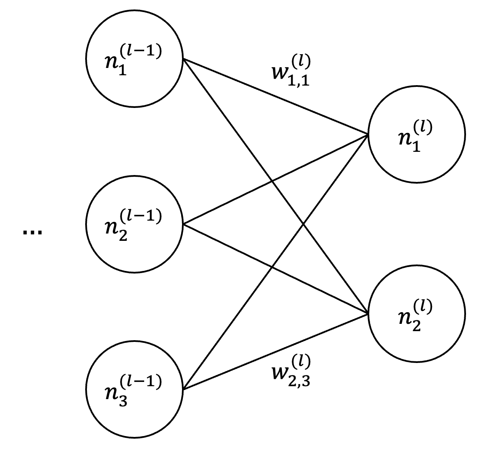

Backpropagation
Revised July 15, 2025
The Deep Q-learning note is optional but recommended background reading.
Neural networks are trained by minimizing a loss function that quantifies prediction error over a dataset. Because the loss depends on millions of parameters, each influencing the network's output through nested, nonlinear computations, direct minimization is infeasible. Instead, optimization proceeds by iteratively computing the loss gradient with respect to the parameters and updating the parameters in the direction of steepest descent. Letting \(\mathbf{w}\) denote the full parameter vector, the gradient \(\nabla L(\mathbf{w})\) specifies how infinitesimal changes to each \(w_i\) affect the loss. The negative gradient \(-\nabla L(\mathbf{w})\) defines the direction in parameter space along which the loss decreases most rapidly.
Computing \(\nabla L(\mathbf{w})\) in a deep network requires differentiating a composition of functions induced by the architecture itself — each layer transforms its input through affine operations and nonlinear activation functions, with outputs passed as inputs to the next layer. Gradients with respect to early-layer parameters must propagate through this entire sequence via repeated applications of the chain rule. A naive implementation would compute each partial derivative independently, repeatedly evaluating shared intermediate expressions. This redundancy scales poorly with network depth and width, rendering the approach impractical for modern architectures.
Backpropagation computes \(\nabla L(\mathbf{w})\) via a two-pass procedure that eliminates redundant computation. During the forward pass, inputs propagate through the network while intermediate quantities — weighted inputs \(z\) and activations \(g\) — are cached at each layer. The backward pass then reuses these values to propagate the error in reverse, yielding all partial derivatives in a single sweep. This recursive structure reduces the computational cost from quadratic to linear in the number of parameters.
This procedure is a special case of reverse-mode automatic differentiation, a general technique for computing gradients of scalar-valued functions with respect to high-dimensional inputs. Reverse-mode differentiation is asymptotically more efficient than forward-mode differentiation — which computes gradients one input at a time — when the number of inputs (i.e., parameters) exceeds the number of outputs (i.e., loss), as it computes the full gradient in a single backward traversal. Neural networks fall into this regime as the loss is scalar-valued, while the parameter space is typically large. Backpropagation therefore realizes the asymptotic efficiency of reverse-mode differentiation while preserving exactness.
Network Structure
Consider a Deep Q-network (DQN) trained to minimize the Bellman error:
\[ \begin{align*} Y = r + \gamma \max_{a’} Q(s’, a’; \theta^-) \\ \text{BE} = \frac{1}{2} \left[ Q(s, a; \theta) - Y \right]^2 \;, \end{align*} \]
where \(\theta\) are the current network parameters and \(\theta^-\) are the target network parameters. Assume a minibatch size of one. In this DQN, let \(w^{(l)}_{i,j}\) denote the weight that connects \(j^\text{th}\) neuron in the \((l-1)^\text{th}\) layer to the \(i^\text{th}\) neuron in the \(l^\text{th}\) layer, \(b^{(l)}_i\) denote the bias of the \(i^\text{th}\) neuron in the \(l^\text{th}\) layer, and \(g^{(l)}_i\) denote the activation of the \(i^\text{th}\) neuron in the \(l^\text{th}\) layer.
|  |
Assume \(|\mathcal{A}| = 2\), thus the output layer is \(\mathbf{g}^{(o)} = [g^{(o)}_1, g^{(o)}_2]^\top\). If the penultimate layer contains three neurons, the output activation \(g^{(o)}_1\) is given by:
\[ \begin{equation}\label{eq:output-value} g^{(o)}_1=\sum_{j=1}^3 w^{(o)}_{1,j}g^{(o-1)}_j+b^{(o)}_1 \end{equation} \]
More generally, an internal activation \(g^{(l)}_i\) satisfies:
\[ \begin{equation}\label{eq:activation-value} g^{(l)}_i = \sigma\left( \sum_j w^{(l)}_{i,j} g^{(l-1)}_j + b^{(l)}_i \right) \;, \end{equation} \]
where the sum is over all neurons in layer \(l - 1\) and \(\sigma\) is a non-linear activation function (Equation \(\eqref{eq:output-value}\) omits \(\sigma\) because the output layer in a DQN uses a linear activation).
The expression in Equation \(\eqref{eq:activation-value}\) admits a compact vectorized form:
\[ \begin{equation*} \mathbf{g}^{(l)} = \sigma\left(\mathbf{z}^{(l)}\right) = \sigma\left( \mathbf{W}^{(l)} \mathbf{g}^{(l-1)} + \mathbf{b}^{(l)} \right) \;, \end{equation*} \]
where \(\mathbf{z}^{(l)}\) is the vector of weighted inputs to layer \(l\), \(\mathbf{W}^{(l)}\) is the weight matrix, and \(\mathbf{b}^{(l)}\) the bias vector. The activation function \(\sigma\) is applied elementwise, i.e., \(\sigma(\mathbf{z})_i = \sigma(z_i)\).
Backpropagation
Assume \(Q(s, a_1; \theta) > Q(s, a_2; \theta)\) and \(Q(s, a_1; \theta) < Y\). Reducing the Bellman error in this setting requires increasing \(Q(s, a_1; \theta)\). This Q-value is determined by the output activation \(g^{(o)}_1\), which in turn depends on the hidden activations \(g^{(o-1)}\), the weights \(w^{(o)}_{1,j}\), and the bias \(b^{(o)}_1\). To illustrate how internal quantities influence the loss, consider the contribution of the hidden activation \(g^{(o-1)}_1\), which affects \(g^{(o)}_1\) through \(w^{(o)}_{1,1}\). The value of this activation can be raised by adjusting the bias \(b^{(o-1)}_1\), the weights \([w^{(o-1)}_{1,1}, w^{(o-1)}_{1,2}, w^{(o-1)}_{1,3}]^\top\), and (indirectly) the activations \([g^{(o-2)}_1, g^{(o-2)}_2, g^{(o-2)}_3]^\top\) from the previous layer.
The influence of each weight \(w^{(o-1)}_{1,j}\) on \(g^{(o-1)}_1\) scales with the corresponding activation \(g^{(o-2)}_j\). For example, if \(g^{(o-2)}_1 > g^{(o-2)}_2\), then a perturbation to \(w^{(o-1)}_{1,1}\) induces a larger change in \(g^{(o-1)}_1\) than an equal perturbation to \(w^{(o-1)}_{1,2}\). The effect of such changes on the Bellman error is quantified by the partial derivatives of \(\text{BE}\) with respect to each parameter. For example, the sensitivity of \(\text{BE}\) to \(w_{1,3}^{(o-1)}\) is:
\[ \begin{equation}\label{eq:weight-derivative} \frac{\partial \text{BE}}{\partial w_{1,3}^{(o-1)}} = \left( \frac{\partial \text{BE}}{\partial g_1^{(o)}} \frac{\partial g_1^{(o)}}{\partial g_1^{(o-1)}} \right) \cdot \frac{\partial g_1^{(o-1)}}{\partial z_1^{(o-1)}} \cdot \frac{\partial z_1^{(o-1)}}{\partial w_{1,3}^{(o-1)}} = \color{red}{\left( \left[ g_1^{(o)} - Y \right] w^{(o)}_{1,1} \right) \sigma’(z_1^{(o-1)})} \color{blue}{g_3^{(o-2)}} \end{equation} \]
where \(\sigma'\) denotes the derivative of the activation function. For example, if \(\sigma(z)\) is a sigmoid, then \(\sigma’(z) = \sigma(z)(1 - \sigma(z))\).
The gradient with respect to the bias \(b_1^{(o-1)}\) is computed analogously:
\[ \begin{equation}\label{eq:bias-derivative} \frac{\partial \text{BE}}{\partial b_1^{(o-1)}} = \left( \frac{\partial \text{BE}}{\partial g_1^{(o)}} \frac{\partial g_1^{(o)}}{\partial g_1^{(o-1)}} \right) \cdot \frac{\partial g_1^{(o-1)}}{\partial z_1^{(o-1)}} \cdot \frac{\partial z_1^{(o-1)}}{\partial b_1^{(o-1)}} = \color{red}{\left( \left[ g_1^{(o)} - Y \right] w^{(o)}_{1,1} \right) \sigma’(z_1^{(o-1)})} \color{blue}{1} \end{equation} \]
The examples in Equations \(\eqref{eq:weight-derivative}\) and \(\eqref{eq:bias-derivative}\) follow a common structure — each derivative is computed by chaining local sensitivities. More generally, the chain rule applies to each individual parameter:
\[ \begin{equation*} \frac{\partial \text{BE}}{\partial w_{i,j}^{(l)}} = \color{green}{\frac{\partial \text{BE}}{\partial g_i^{(l)}}} \cdot \frac{\partial g_i^{(l)}}{\partial z_i^{(l)}} \cdot \frac{\partial z_i^{(l)}}{\partial w_{i,j}^{(l)}} \;. \end{equation*} \]
Notice that computing the partial derivative of the activation \(\color{green}{\partial \text{BE}/\partial g_i^{(l)}}\) is required by this general form. Unlike weights and biases, activations \(g_i\) are intermediate quantities determined by the network's parameters but are not directly tunable. Changes to \(g^{(l)}\) must instead be induced by modifying the weights \(w^{(l)}\) and biases \(b^{(l)}\) that govern its value. Nevertheless, an activation's influence on the loss can still be characterized by computing the appropriate partial derivatives using the chain rule. We examine these partial derivatives not to update activations directly, but because they expose a recurrence structure that allows gradients to be propagated backward through the network efficiently.
Consider the effect of \(g^{(o-2)}_3\) on the Bellman error. If \(w^{(o-1)}_{1,3} > 0\), then increasing \(g^{(o-2)}_3\) increases \(g^{(o-1)}_1\); if \(w^{(o-1)}_{1,3} < 0\), then increasing \(g^{(o-2)}_3\) decreases \(g^{(o-1)}_1\). In both cases, the effect is proportional to \(|w^{(o-1)}_{1,3}|\). The derivative of \(\text{BE}\) with respect to \(g^{(o-2)}_3\) is:
\[ \begin{equation*} \frac{\partial \text{BE}}{\partial g_3^{(o-2)}} = \sum_k \frac{\partial \text{BE}}{\partial z_k^{(o-1)}} \frac{\partial z_k^{(o-1)}}{\partial g_3^{(o-2)}} \;. \end{equation*} \]
For neuron 1, the contribution to this sum is:
\[ \begin{equation}\label{eq:activation-derivative} \left. \frac{\partial \text{BE}}{\partial g_3^{(o-2)}} \right|_{k=1} = \left( \frac{\partial \text{BE}}{\partial g_1^{(o)}} \frac{\partial g_1^{(o)}}{\partial g_1^{(o-1)}} \right) \cdot \frac{\partial g_1^{(o-1)}}{\partial z_1^{(o-1)}} \cdot \frac{\partial z_1^{(o-1)}}{\partial g_3^{(o-2)}} = \color{red}{\left( \left[ g_1^{(o)} - Y \right] w^{(o)}_{1,1} \right) \sigma’(z_1^{(o-1)})} \color{blue}{w_{1,3}^{(o-1)}} \;. \end{equation} \]
Crucially, the subexpression \((\partial \text{BE}/\partial g) \sigma’(z)\) appears in each of Equations \(\eqref{eq:weight-derivative}\)–\(\eqref{eq:activation-derivative}\) (in the present context, it takes the form \(\color{red}{([ g_1^{(o)} - Y ] w^{(o)}_{1,1} ) \cdot \sigma’(z_1^{(o-1)})}\)). Though it appears with different downstream terms, which are emphasized in \(\color{blue}{\text{blue}}\), this core structure remains invariant. It captures the local contribution of each neuron to the loss and motivates defining the local error signal:
\[ \begin{equation}\label{eq:delta} \delta_1^{(o-1)} = \frac{\partial \text{BE}}{\partial z_1^{(o-1)}} = \underbrace{\left( \sum_i \delta_i^{(o)} w_{i,1}^{(o)} \right)}_\text{Propagated Error} \cdot \underbrace{\sigma’(z_1^{(o-1)})}_\text{Local Gradient} \end{equation} \]
The local error \(\delta\) comprises two components. The first is the propagated error, the sum of error signals from the next layer (\(\delta_i^{(o)}\)), each scaled by the strength of its connection (\(w_{i,1}^{(o)}\)). This term captures the degree to which the current neuron is responsible for the downstream error. The second is the local gradient \(\sigma’(z)\), which reflects the neuron's sensitivity. If the activation function is saturated (e.g., in the flat region of a sigmoid), \(\sigma’(z)\) is near zero and the error signal is suppressed. That is, if the neuron is insensitive, the local error \(\delta\) will vanish even if the propagated error is large. The product \(\delta\) therefore represents downstream “blame” gated by the neuron's capacity to respond.
The recursive structure in Equation \(\eqref{eq:delta}\) simplifies the expression for parameter gradients:
\[ \begin{align*} \frac{\partial \text{BE}}{\partial w_{i,j}^{(l)}} &= \delta_i^{(l)} \cdot g_j^{(l-1)} && \text{cf. Equation } \eqref{eq:weight-derivative} \\ \frac{\partial \text{BE}}{\partial b_i^{(l)}} &= \delta_i^{(l)} && \text{cf. Equation } \eqref{eq:bias-derivative} \;. \end{align*} \]
For example, applying Equation \(\eqref{eq:delta}\) to neuron 1 in layer \(o-1\) yields:
\[ \begin{align} \delta_1^{(o-1)} &= \left(w_{1,1}^{(o)} \cdot \delta_1^{(o)} + w_{2,1}^{(o)} \cdot \delta_2^{(o)} \right) \cdot \sigma’(z_1^{(o-1)}) \nonumber \\ &= \left(w_{1,1}^{(o)} \cdot \delta_1^{(o)} \right) \cdot \sigma’(z_1^{(o-1)}) \;. \label{eq:example-delta} \end{align} \]
Equation \(\eqref{eq:example-delta}\) holds because, in a DQN, the loss depends only on the Q-value corresponding to the selected action. Thus, assuming action \(a_1\) is taken, \(\delta_2^{(o)} = 0\), and the term \(w_{2,1}^{(o)} \cdot \delta_2^{(o)}\) contributes nothing to the sum. This is the reason for the inclusion of \(w_{1,1}^{(o)}\) in Equations \(\eqref{eq:weight-derivative}\)–\(\eqref{eq:activation-derivative}\) — it is the only weight that connects the hidden neuron being analyzed to an output neuron that has a non-zero error.
Why Only \(w_{1,1}^{(o)}\) Appears in Equations \(\eqref{eq:weight-derivative}\)–\(\eqref{eq:activation-derivative}\)
Equations \(\eqref{eq:weight-derivative}\)–\(\eqref{eq:activation-derivative}\) involve only \(w_{1,1}^{(o)}\), even though neuron 1 in layer \(o-1\) connects to both output neurons. This may appear to omit relevant paths through \(g_2^{(o)}\), but reflects a simplification specific to the DQN.
In general, the propagated error for neuron 1 in layer \(o-1\) includes contributions from all downstream neurons. For example, with \(|\mathcal{A}| = 2\):
\[ \begin{equation*} \delta_1^{(o)} w_{1,1}^{(o)} + \delta_2^{(o)} w_{2,1}^{(o)} \;. \end{equation*} \]
However, the Bellman error depends only on the Q-value of the selected action. Assuming action \(a_1\) is taken, the loss is a function of \(g_1^{(o)}\) alone, and does not involve \(g_2^{(o)}\). Hence, \(\delta_2^{(o)} = \partial \text{BE} / \partial z_2^{(o)} = 0\), and the second term vanishes. The effective propagated error becomes:
\[ \begin{equation*} \delta_1^{(o)} w_{1,1}^{(o)} + 0 \cdot w_{2,1}^{(o)} = \delta_1^{(o)} w_{1,1}^{(o)} \;. \end{equation*} \]
Thus, only the path through \(g_1^{(o)}\) appears in the derivatives. In settings where the loss depends on all outputs (such as multi-class classification) the full sum would be retained.
The bias \(b_1^{(o)}\) does not appear in the propagated error because error flows backward only through parameters that modulate inter-layer dependencies. Formally, the influence of a neuron in layer \(o-1\) on the weighted input \(z_i^{(o)}\) is given by the partial derivative \(\partial z_i^{(o)}/\partial g_j^{(o-1)} = w_{i,j}^{(o)}\). The bias term \(b_i^{(o)}\) is independent of any previous-layer activation and therefore contributes nothing to this gradient. Consequently, biases influence the local error at their own layer but do not participate in backward signal propagation.
More generally, this recursive structure is expressed compactly in matrix notation:
\[ \begin{equation*} \boldsymbol\delta^{(l)} = (\mathbf{W}^{(l+1)})^\top \boldsymbol\delta^{(l+1)} \odot \sigma’(\mathbf{z}^{(l)}) \;, \end{equation*} \]
where \(\odot\) denotes element-wise multiplication.
The base case of this recurrence occurs at the output layer:
\[ \begin{equation*} \delta_1^{(o)} = \frac{\partial \text{BE}}{\partial z_1^{(o)}} = \frac{\partial \text{BE}}{\partial g_1^{(o)}} \frac{\partial g_1^{(o)}}{\partial z_1^{(o)}} = \left[ g_1^{(o)} - Y \right] \cdot 1 = \left[ g_1^{(o)} - Y \right] \end{equation*} \]
This recurrence is the foundation of backpropagation's efficiency. It reuses the already-computed error from the subsequent layer to compute the error in the current layer, ensuring that no intermediate quantity is recalculated. Without this structure, computing gradients would require explicitly applying the chain rule through all intermediate layers:
\[ \begin{equation*} \frac{\partial\text{BE}}{\partial w_{i,j}^{(l)}} = \left( \sum_{k_{l+1}, \dots, k_o} \frac{\partial\text{BE}}{\partial z_{k_o}^{(o)}} \cdot \left( \prod_{m=l+2}^{o} \frac{\partial z_{k_m}^{(m)}}{\partial z_{k_{m-1}}^{(m-1)}} \right) \cdot \frac{\partial z_{k_{l+1}}^{(l+1)}}{\partial z_{i}^{(l)}}\right) \cdot \frac{\partial z_{i}^{(l)}}{\partial w_{i,j}^{(l)}} \end{equation*} \]
The number of such paths grows exponentially with depth, making naive gradient computation intractable in deep networks.
Backpropagation, by contrast, avoids this combinatorial explosion by reusing shared intermediate computations. Rather than summing over all paths, it propagates error signals recursively, reducing the cost to a linear function of the number of parameters. Letting \(n_l\) denote the number of neurons in layer \(l\), the total computational cost becomes:
\[ \begin{equation*} \mathcal{O}\left( \sum_{l=1}^{L} n_l n_{l-1} \right) \;. \end{equation*} \]
This cost reflects two passes through the network — a forward pass to compute activations (required to evaluate the network output) and a backward pass to compute gradients.
Backpropagation transforms what would otherwise be an exponential calculation into a sequence of matrix multiplications, making it possible to train deep networks with millions of parameters. Its efficiency lies not in avoiding the chain rule, but in organizing it to maximize reuse and minimize redundancy.
 |
References
- Neural Networks and Deep Learning (2015)
Michael Nielsen
- Neural Networks [video] (2018)
Grant Sanderson
- Calculus on Computational Graphs: Backpropagation (2015)
Christopher Olah
- Backpropagation ≠ Chain Rule (2021)
Lunjia Hu